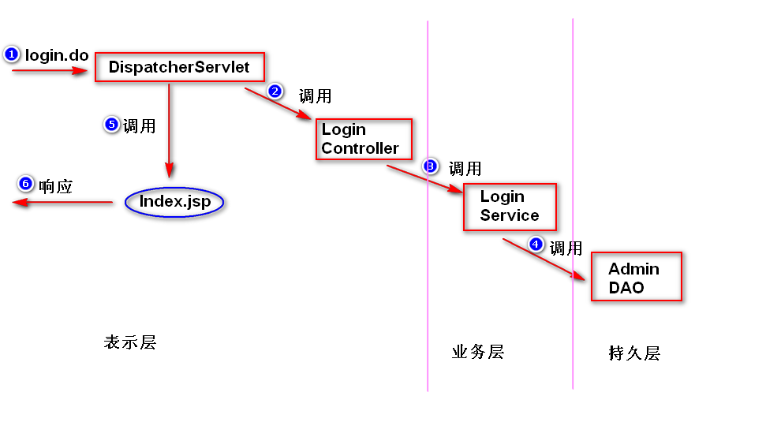
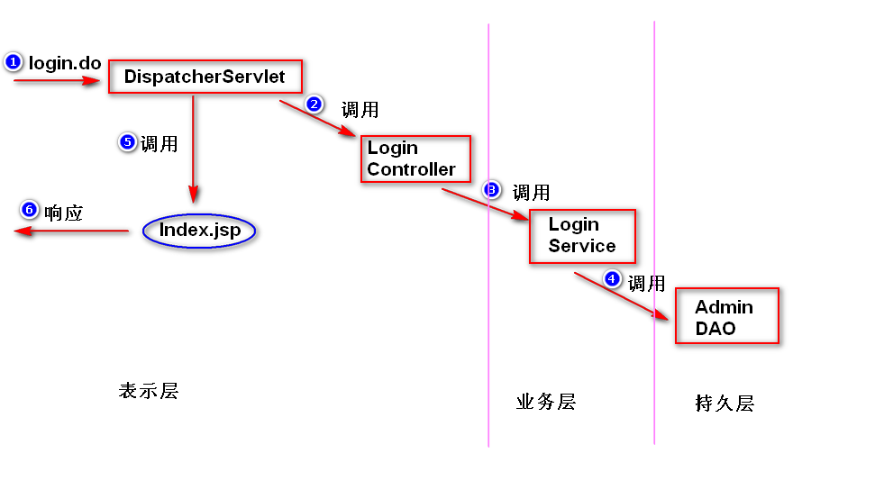
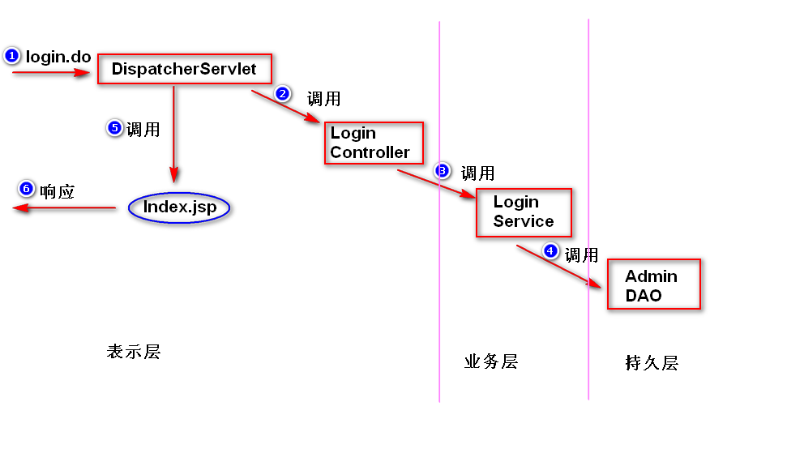
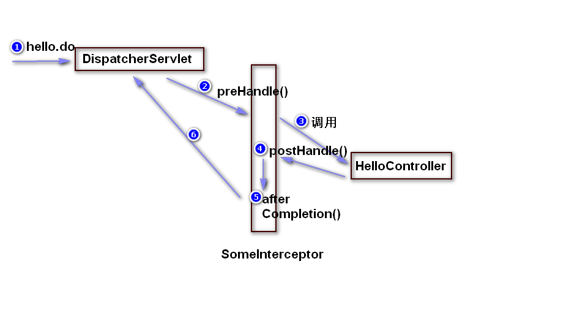
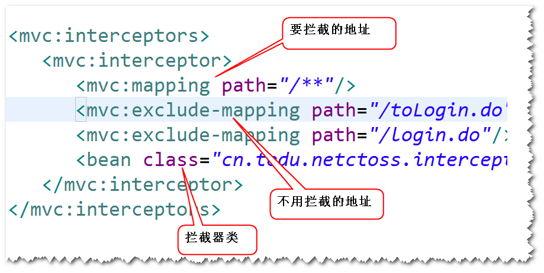
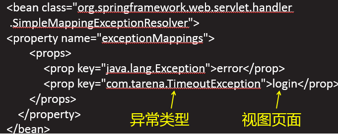
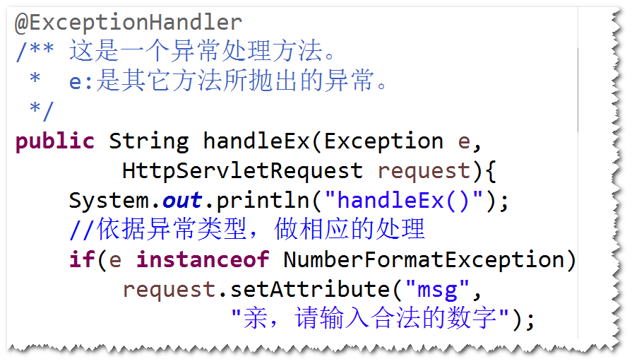

 为了方便代码的维护，需要保证类的职责要单一，这样
就产生了分层（将一个类拆分成多个类，形成类之间的调用关系）。
表示层(UI层): 数据展现和操作界面，另外，还要负责请求分发。
业务层(服务层): 封装业务逻辑。
持久层(数据访问层): 封装数据访问逻辑。
注:
a. 表示层调用业务层，业务层调用持久层。
b. 上一层要通过接口来调用下一层（这样，下一层的实现发生了
改变，不影响上一层）。
a.方便代码的维护
下一层的实现发生改变，不影响上一层。
b.方便测试
c.方便分工协作

表单提交时，浏览器会对中文参数值进行编码。服务器端默认
会使用iso-8859-1来解码。所以会产生乱码。
注：
浏览器会使用打开该表单所在页面时的字符集来解码。
配置SpringMVC提供的过滤器(CharacterEncodingFilter)。
注意：
a.表单提交方式必须为post
b.编码设置要与客户端一致
spring框架提供的一个组件，当DispatcherServlet收到请求之后，
如果有拦截器，会先调用拦截器，然后再调用处理器(Controller)。
注：
过滤器属于Servlet规范，用于拦截Servlet容器的调用过程；
而拦截器属于spring框架，用于拦截DispatcherServlet的调用过程。
step1. 写一个java类，实现HandlerInterceptor接口。
step2. 在拦截器接口方法当中，实现拦截处理逻辑。

step3. 配置拦截器。

当有多个拦截器都满足拦截要求，则依据配置的先后顺序来执行。
将异常抛给SpringMVC框架(抛给DispatcherServlet)，由Spring
来帮我们处理。
step1. 配置简单异常处理器。

step2. 添加异常处理页面。
step1. 添加一个异常处理方法。
注： 在处理器(Controller)添加一个方法，该方法
需要添加@ExceptionHandler注解。该方法专门用来
处理其它方法所抛出的异常。

step2. 添加异常处理页面。